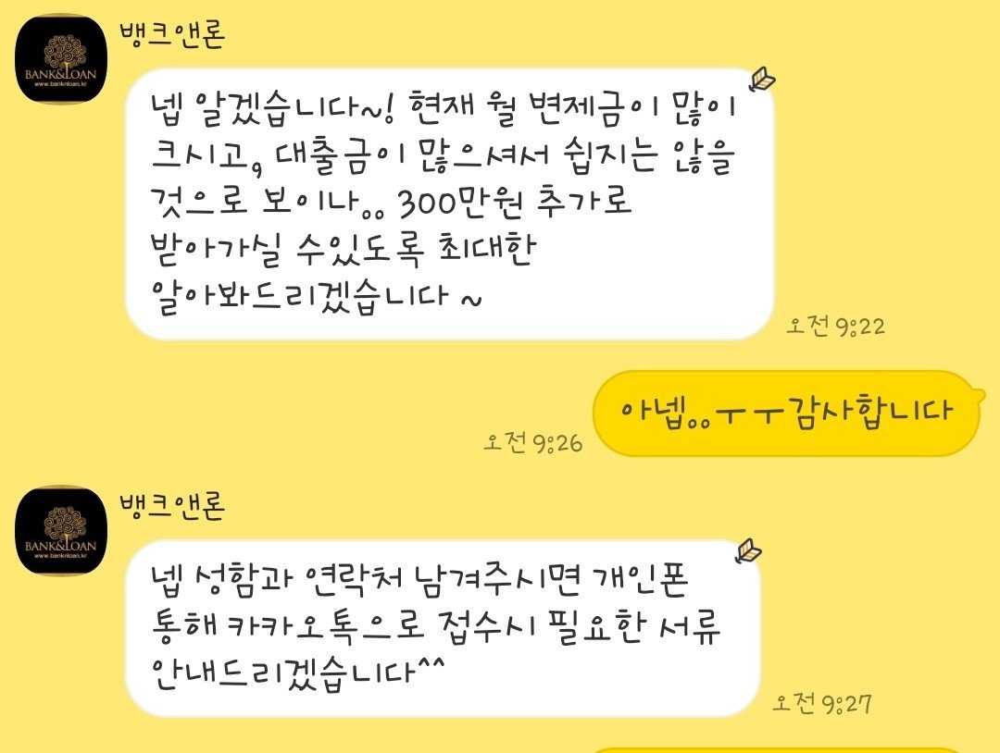
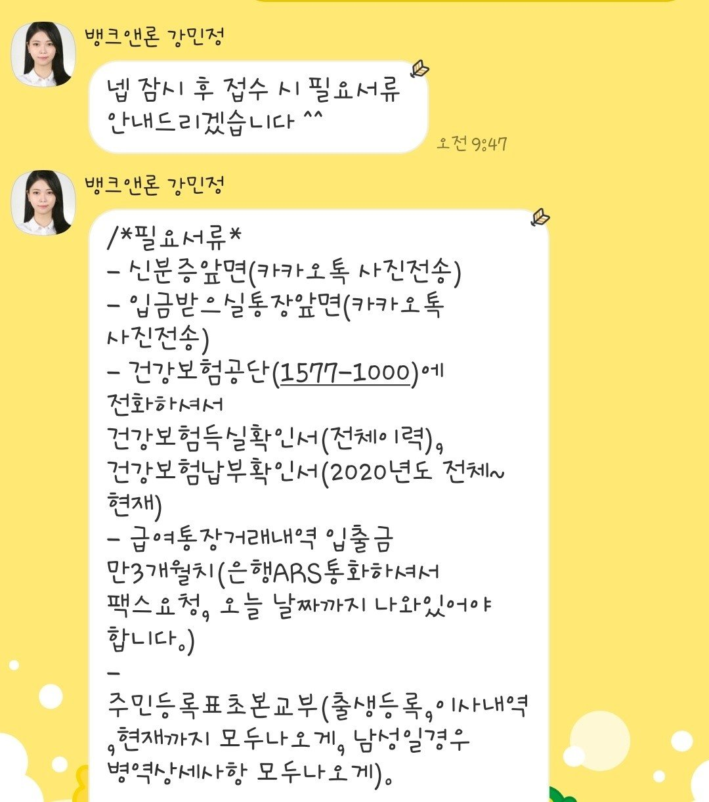

[개인회생자대출] 강민정상담사님 대출후기
현재 근무기간5년 연봉 2600정도 됩니다
개인회생 29회차 1회 미납도 있었구요
기존대출도 2000정도있었어요
개회미납금+ 추가필요자금 해서 300정도필요한상황이였구요
기존대출이많아 안될까봐 조마조마하고 걱정했는데 다행히 생각보다 안내받은서류가 간단했구요^^
오전에신청하고 오후에 바로 입금되었어요
미납금 납부하는 조건에 기존대출 상환조건에 여유자금 추가로 금리인하까지해서 승인났네요 !
개인회생 신청전부터 뱅크에서 도움많이받았습니다^^
감사드립니다^^

